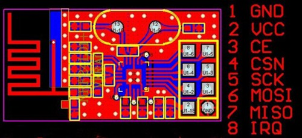

The Nordic NRF24L01 is a small and extremely inexpensive wireless chip. The arduino is able to communicate with the chip thanks to several open source libraries, and the chips do an excellent job communicating with each other over. According to Nordic's produt page: "The nRF24L01 is a highly integrated, ultra low power (ULP) 2Mbps RF transceiver IC for the 2.4GHz ISM (Industrial, Scientific and Medical) band".
THe NRF has many possible uses, especially thanks to it's low cost. Libries to use the chip as a mesh network exist, although most of the projects for this course will probably involve direct communication between 2 chips. We are going to run a simple Ping Pong sketch from one of the libraries. With this, we have a communication platform between 2 ARduino's that are ready to communicate for whatever we would like them to do.
The hardware is simple - the NRF can communicate with an Arduino over MISO/MOSI. MISO: Master In, Slave Out. and MOSI. Master Out, Slave In. The arduino will be MOSI and the NRF will be MISO. Let's take a look at the NRF8266 diagram:
The only pins on the NRF that we care about are 1,2,6,7. This is pins Ground, VCC, MOSI and MISO. Connect the ground to arduino's ground, VCC to th3 3.3v reading (we know this from the data sheet). Connect MOSI to pin 11 and MISO to pin 12. Use a breadboard (try bending large female header pins and connecting the NRF accross the center of a breadboard), or just directly connect them with jumper wires.
Lucky for us, all of the difficult parts of using the NRF chip are handled by this RF24 library. After downloading (github -> Download as zip) and installing the library, you should be ready to hack away on the software side. The only tricky bit is using 2 arduino's with one laptop at a time can be frustrating, and - thanks to IDEATE lending - it's easy to just grab another laptop. I highly recommend this.
Let's run the RF24 Library's GettingStarted_HandlingData sketch. Upload the sketch to both arduino's. A few notes on the sketch: the 'radioNumber' bool needs to be a unique 0 or 1 - one NRF is 0, the other would be 1. Next, in the "RF24 Radio(11,12); line, pin 11 is the one connecting to the "MOSI" pin on the NRF, and the later argument, pin 12, connectes to the "MISO" pin on the NRF. Finally, the code executes the NRF into 'listening' mode by default, actually switching to the sending data mode (and listening for the response) needs to be done from the Serial Monitor. Don't get confused by all the 'got_time' variables - the code is sending timestamps as it's data, and using that to calculate the time it took for the signal to make a round-trip.
Now that you have this GettingStarted sketch going, be sure to try some of the other example sketches in the library. Read through the, and see how the NRF communicates - particularly the IRQ_Simple and Transfer examples. Most of the time, one chip will be in a sender position, which is excellent for many products.
sBe wary of debugging. The RF24 library example code does not have particularly useful error messages. Be sure to check that everything is connected properly if it seems the devices arn't communicating with each other well. Also, be wary of signals 'crossing streams' if multiple students in a class are working on these at the same time - it's a simple fix to make in the software, but something to be aware of.